Many related hydride reagents, having different reductive power and selectivity, incorporate a variety of organic ligands on the hydride carrier atom. Among these are: lithium triethylborohydride (super hydride), potassium tri-sec-butylborohydride (K-Selectride), sodium bis(2-methoxyethoxy)aluminumhydride (Red-Al), sodium cyanoborohydride, sodium triacetoxyborohydride. various organosilanes and in situ generated aluminum hydride and dichlorohydride. Organoborane derivatives having modified reactivity relative to borane itself include: bis(1,2-dimethylpropyl)borane (disiamylborane), 9-borabicyclo[3.3.1]nonane (9-BBN) & catecholborane (BHcat).
This page is the property of The Edvibe Team. Comments, questions and errors should be sent to contact@edvibe.co.ke. These pages are provided to the IOCD to assist in capacity building in chemical education. 05/05/2013
The importance of enolate anions as synthetic intermediates is well established. Nevertheless, problems remain concerning their selective formation and reaction. For example, aldehyde enolate bases are likely to undergo the aldol reaction during their formation, and ketones like 2-heptanone have two different alpha-carbons, each capable of enolization. The ambident nature of enolate anions also enables electrophilic attack at both oxygen and carbon, but in most synthesis applications bonding to carbon is desired. Finally, enolate anions may often be formed as E/Z stereoisomers, and it has been shown that reaction stereoselectivity, when new chiral centers are created, depends on the enolate configuration. The following diagram illustrates how the conditions under which enolate anion formation is accomplished can influence the regioselectivity of the reaction. The two ketone substrates, 2-heptanone and 2-methylcyclohexanone, each have differently substituted alpha-carbons. In each case, enolate anion mixtures are generated by reaction with a strong 2º-amide base (LDA is the usual choice). If the ketone is added to a cold THF solution of excess base, enolate anion formation is fast and irreversible (procedure a). On the other hand, if a slight excess of ketone is allowed to remain in solution, an equilibrium involving the ketone and the various enolate species is established (procedure b). At equilibrium the more stable enolate anion will predominate. The examples given in the diagram also report results from an equilibrating preparation in which the lithium metal in LDA is replaced by potassium (procedure c).
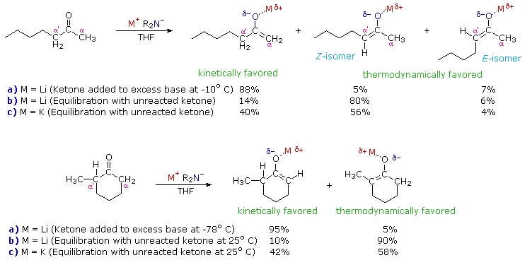
Several important principles are demonstrated here. First, if the enolate species has substantial double bond character, the more highly-substituted enolate double bond should predominate at equilibrium, as predicted from the stabilities of substituted alkenes. Since lithium-oxygen bonds are more covalent (have less ionic character) than potassium-oxygen bonds, the lithium enolate approximates an alkene more closely than the potassium enolate. Second, the greater ionic character of the potassium enolate places an increased negative charge on the alpha-carbon, a condition that is disfavored by alkyl group substitution. Indeed, the stability order of substituted carbanions is opposite to that of carbocations thanks to the electron donating character of alkyl groups relative to hydrogen. Finally, the rate of proton removal from an alpha-carbon site is decreased by alkyl substitution, probably reflecting a combination of steric hindrance (to bulky bases) and decreased carbanion stability. In both of the examples shown above, the conditions used in procedure (a) are typical of kinetically favored enolate formation, whereas those used in procedure (b) favor thermodynamic enolate formation. The comparative acidities provided by pKa values are derived from measurements made under equilibrating conditions, and therefore reflect thermodynamic acidity. Determinations of kinetic acidity require competitive isotope exchange experiments.
These principles influence the course of enolate alkylation reactions, as shown in the following diagram. In the first case, 2-methylcyclohexanone is converted to a thermodynamic enolate mixture, which is then reacted with methyl iodide. The major product is the expected 2,2-dimethylcyclohexanone (from the more stable enolate anion), but this is accompanied by di- and trimethylated products together with about 20% unreacted starting material. The complexity of the product mixture is due to acid-base proton transfer between alkylated products and unreacted enolate anion. In other words, once a small amount (say 5%) of dimethylcyclohexanone is formed, it finds itself in solution with a relatively high concentration of a strong base (the remaining enolate anion) that can remove another alpha-proton, giving a new enolate anion that is further methylated. If the kinetically favored lithium enolate (see the previous diagram) is used instead of the equilibrium potassium enolates, 2,6-dimethylcyclohexanone is the chief product. The second reaction is an intramolecular alkylation that can occur in two different ways. If the kinetically favored enolate (methyl proton removal) is formed at low temperature, it reacts rapidly on warming to form a seven-membered ring. Alternatively, the weaker base, potassium tert-butoxide (in the alcohol as solvent), generates an equilibrium mixture of enolates which eventually react by intramolecular alkylation. The thermodynamically favored α'-enolate predominates, and the resulting alkylation generates a five-membered ring.
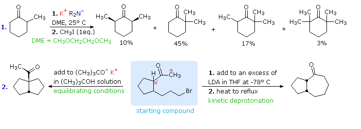
Another aspect of enolate anion alkylation, not yet addressed, is the possibility of electrophilic bonding at oxygen. One example of such behavior will be displayed by clicking the "Toggle Reactions" button. Because of the substantial negative charge on the oxygen of ambident anions, it might be expected that O-alkylation would be the rule rather than the exception. This, in fact, is true when fully or extensively ionized enolate salts are reacted with strong electrophiles. Ionization of enolates is facilitated by high dielectric solvents, such as DMSO and DMF (dimethylformamide), especially for potassium and cesium cation salts. As shown in the lower part of the second diagram, the negatively charged oxygens of DMSO cluster about a cation, providing substantial solvation stabilization. No such solvation exists for the enolate anion, leaving it open to reaction with an electrophile. Lithium enolates have significant covalent character in the metal-oxygen bond, and this retards electrophile attack at oxygen. Ether solvents such as THF and DME (dimethoxyethane or glyme) are commonly used for alkylations because they are inert to strong base and dissolve enolate salts more effectively than hydrocarbons. The difunctional ether DME (dimethoxyethane) is especially effective at solvating cations; and this fact has led to the preparation of cyclic polyethers, known as crown ethers, which are extraordinarily powerful solvating agents. Crown ethers may be added to enolate salt solutions to enhance their ionization. Indeed, the size of the crown ether can be tailored to fit the cation being used, providing additional control over the course of enolate reactions. The nomenclature of crown ethers consists of two numbers. The first (larger) number designates the overall ring size. The second number indicates the number of ether oxygens. A symmetrical arrangement of the oxygens in the ring is assumed.
One way of producing selective enolate anion intermediates is to first trap and isolate them as silyl enol ethers. These relatively stable compounds may then be used to generate isomerically pure enolate anions, or in some cases as enolic nucleophiles in their own right. In the following diagram, the first reaction illustrates the formation of a mixture of silyl enol ethers under equilibrating conditions. If a higher proportion of the minor isomer is desired the kinetically favored lithium enolate can be prepared and quenched with trimethylsilyl chloride. In either case the silyl ether mixture may be separated by distillation. Once a pure silyl ether isomer is in hand, it may be used to generate the corresponding lithium enolate in the manner shown. Alkylation reactions of these enolates then produces pure regioisomeric products.
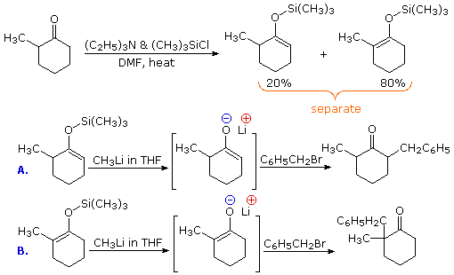
By clicking the "Toggle Reactions" button under the previous diagram, two examples of the direct use of silyl enol ethers will be displayed. Since the silyl ethers are not as reactive as enolate anions, the electrophiles with which they combine must be made more reactive. When carbonyl electrophiles are used, this can be accomplished by Lewis acid catalysts, as shown.
The formation of enamines by reaction of 2º-amines with aldehydes or ketones has been described. The double bond of the enamine transmits the nucleophilic character of the nitrogen to the alpha-carbon, in a vinylagous fashion. Because of the resulting ambident nucleophilicity of the enamines, reactions with electrophiles may take place at either nitrogen or carbon. Enamines derived from aldehydes are usually alkylated on nitrogen, an undesirable course for most synthetic applications. Ketones give significant C-alkylation, the thermodynamically favored course, as first demonstrated by G. Stork (Columbia). The iminium ion created by C-alkylation cannot react further, and is easily hydrolyzed to the alkylated ketone. This is particularly useful if dialkylation products are to be avoided. Thus, in the first example, direct methylation of the enolate anion from this ketone gives significant amounts of the dimethyl product, due to enolate proton exchange. As shown, the enamine route gives only mono-methylated product. The second example demonstrates that enamines may be acylated as well as alkylated. In fact, the reversible nature of acylation removes the problem of competing N-acylation. This case also illustrates the general tendency to form the least substituted enamine when two different alpha-sites are present. Conjugation of the non-bonding electron pair on nitrogen with the pi-electrons of the double bond forces the alkyl substituents on nitrogen to lie in the same plane as the double bond (see the resonance equation displayed by the "Toggle Mechanism" button). As a result substitution of the double bond leads to increased steric hindrance with the nitrogen substituents. The five-membered cyclic 2º-amine pyrrolidine is widely used for enamine reactions, in part because this steric hindrance is minimized.
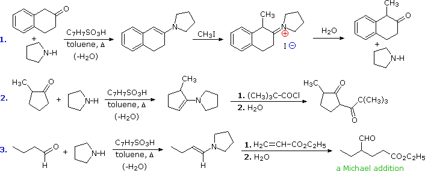
As noted, N-alkylation of enamines is common for aldehydes and some ketones. Michael addition reactions avoid this problem thanks to their reversibility. The third example shows such a reaction, and the "Toggle Mechanism" button displays a possible mechanism. The C-alkylation intermediate is thermodynamically more stable than the N-alkylation species, so it predominates at equilibrium. Both the charges in this intermediate are stabilized by delocalization, and hydrolysis rapidly converts it to the aldehyde-ester product. An interesting alternative is ring closure to a neutral enol ether compound (shown in the blue shaded box) which would also be hydrolyzed to the same product.
Still another way of circumventing some of the undesired aspects of enolate anion chemistry is to replace the oxygen of an aldehyde or ketone substrate with a 1º-amino group, in other words, to convert the carbonyl function to an imine. Imine derivatives are relatively easy to prepare, starting with an aldehyde or ketone and a 1º-amine or hydrazine derivative. The resulting C=N function does not activate alpha-C-H groups as effectively as a carbonyl function, but very strong bases such as LDA, alkyl lithiums and Grignard reagents will convert imines to their enamide conjugate bases quantitatively. This general reaction is shown in the green shaded box below.
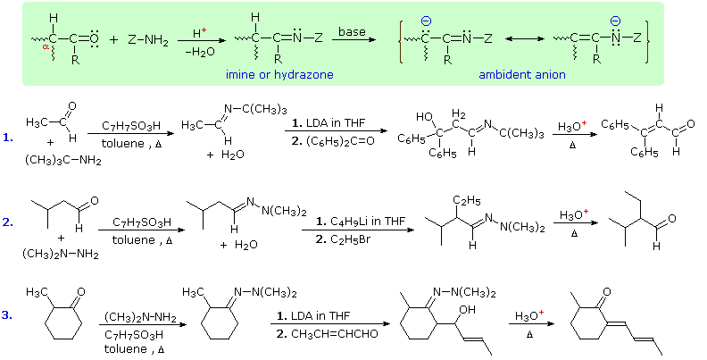
Three illustrations of the use of enamide bases in synthesis are displayed above. The first two examples use aldehyde derivatives, and if we were to attempt these reactions with the aldehyde enolate anion itself, aldol dimerization would result. The C=N function of imines is a poor acceptor of nucleophiles, so it does not assume such a role in aldol-like reactions. The third reaction is an aldol condensation in which a ketone serves as the donor. If cuprous salts are introduced before the unsaturated aldehyde is added to the enamide solution, conjugate addition takes place in preference to the 1,2-aldol addition.
The relative acidities of different acids are commonly measured and cited as pKa values, relative to a standard solvent base, often water. These numbers reflect the equilibrium acidities of the acids. An astounding range of acidities is displayed by even rather simple compounds. The table on the right lists some elemental hydrides from groups 4 through 7 of the periodic table. The pKa's determined (or in some cases estimated) for these compounds are shown beneath the formulas. Approximate values for higher members of group 4 and 5 hydrides (e.g. silane and phosphine) have not been reported. Note that these logarithmic numbers encompass nearly sixty powers of ten. This is a greater span than that encompassed by distance measurements starting from the radius of a hydrogen atom and extending to the diameter of the known universe.
Why do these relatively simple compounds differ in acid strength so markedly? Two factors may be discerned: • First, the compounds in the top row clearly show the importance of electronegativity. All the heavier elements have greater electronegativities than hydrogen, with carbon being the least different. The ionic character of these covalent bonds is such that hydrogen carries a partial positive charge, and the heavier atom a corresponding negative charge. The greatest charge separation is in H-F, where the electronegativity difference is nearly 2. Removal of a proton is facilitated by this charge separation. The covalent bond energies do not correlate inversely with acid strength, as one might have expected, since the two strongest acids have the strongest bonds (H-O 111 kcal/mol & H-F 135 kcal/mol). Finally, the heavy atoms in the top row have similar sizes, the covalent radii being 0.75 ±0.02 Å. The importance of this fact will become apparent in the following discussion. • Second, the compounds in the columns representing periodic groups 6 and 7 show an increase in acidity moving from the top to the bottom. This is opposite to the electronegativity change, and is best attributed to an increase in heavy atom size. When an acid transfers a proton to a base, the remaining residue (the conjugate base) must carry a negative charge. Ignoring solvent stabilization (solvation), the stability of ions is a function of charge density. A small ion has a higher charge density than a larger ion of the same charge, making the smaller ion less stable. From the covalent radius of oxygen compared with sulfur, and fluorine compared with chlorine, it can be estimated that the charge density on the larger atom is half that of the smaller. The resulting stabilization of the conjugate base more than compensates for the decrease in electronegativity in moving down the column; so H2S is a stronger acid than H2O, and HCl a stronger acid than HF. Since sulfur and chlorine are nearly the same size (covalent radii being 1.02 ±0.02 Å), electronegativity explains the difference in acidity between H2S and HCl.
If the heavy atom of an acid carries a formal charge, its acidity will be changed substantially. This is demonstrated by the examples on the right. Ammonium and hydronium ions carry a positive charge, and the acidity of the species is increased by over fifteen powers of ten relative to uncharged ammonia and water. By contrast, hydrogen sulfide and hydrogen selenide are dibasic acids (they have two acidic protons). Once the first proton has been lost, the acidity of the negatively charged conjugate base is reduced over a million fold. This is true for most other dibasic acids such as H2SO4 and H2CO3.
Accurate acidity measurements in the pKa range from 1 to 14 can usually be made in water solution. However, acids stronger than the hydronium ion (H3O(+)) and bases stronger than hydroxide ion (OH(–)) react immediately with this solvent, and the resulting "leveling effect" prevents direct measurement of their pKa's. One way of circumventing this difficulty is to examine the acidity of very strong ( pKa < 0) and very weak ( pKa > 15) acids in different (non-aqueous) solvents, and to extrapolate these measurements to water. For example, solvents such as acetic acid, acetonitrile and nitromethane are often used for studying very strong acids. Very weakly acidic solvents such as DMSO, acetonitrile, toluene, amines and ammonia are used to study the acidities of very weak acids. The errors introduced in extreme cases, such as methane, are often large; but the overall range of acid strengths observed in this manner cannot be questioned. It must be recognized that pKa values for the same compound measured in different solvents will generally be different. The two most common solvents in which such measurements have been made are water and DMSO. The following table presents data for a few representative compounds, with the pKa difference noted in the right hand column. Since anion solvation by water is superior to that provided by DMSO, the pKa values from the latter solvent tend to be higher. However, a decrease in charge density, as with sulfur, or internal delocalization of negative charge, as in the last four compounds, lessens this difference.
Hybridization has a strong influence on acidity, as shown by the three carbon acids on the upper left below. The greater the s-character of the orbital holding the electron pair of the conjugate base, the greater will be the stability of the base. This corresponds to the lower energy of an s-orbital compared with p-orbitals in the same valence shell. It also corresponds to the increased electronegativity or inductive electron withdrawal that is found for different hybridization states of a given atom, as depicted in the graph on the right. The difference in acidity of 2-butynoic acid and butanoic acid, shown in the shaded box at lower left, provides a further illustration of this inductive effect. Carbocation stability is also influenced by hybridization, but in the opposite direction (sp3 > sp2 > sp).
Many carbon acids have enhanced acidity because of a neighboring functional group. The acidity of alpha hydrogens in aldehydes, ketones and esters is well documented, and is the source of many important synthetic procedures. The following equation illustrates the general enolate anion transformation, with the acidic alpha-hydrogen colored red. The resulting ambident anion is stabilized by charge delocalization, and may react with electrophiles at both carbon and oxygen. Stereoelectronic factors govern the enolization reaction, as illustrated by clicking on the diagram below. The bond from the alpha carbon to the acidic alpha-hydrogen must be oriented 90º to the plane of the carbonyl group, or parallel to the pi-electron system (colored magenta here). The ideal overlap occurs with a 0º dihedral angle between this bond and the pi-orbital, as shown.
By clicking on the diagram a second time, the importance of this stereoelectronic requirement will be demonstrated. An increase in the acidity of carbon acids activated by two carbonyl groups is well known, and is illustrated by the two beta-dicarbonyl compounds on the left side of the diagram. In such cases the acidic C-H unit may be oriented perpendicular to both carbonyl groups, and the resulting planar anion is stabilized by additional charge delocalization (over both oxygens and the central carbon). In the case of the bicyclic diketone on the right, the C-H bond nearly eclipses the two carbonyl C-O bonds, resulting in a dihedral angle with the pi-electron systems of roughly 90º. Consequently, the acidity of this hydrogen is similar to that of the hydrogens of an alkane or cycloalkane. It should also be apparent that if an enolate anion were to be formed to the bridgehead carbon, the double bond would be prohibited by Bredt's rule.
The most common acid-base terminology, pKa , reflects an equilibrium acidity, extrapolated or normalized to water. In the following equation a base, B:(–) M(+), abstracts a proton from an acid, H-A, to form a conjugate acid - base pair (A:(–) M(+) & B-H). The rate of the forward proton abstraction is k f , and the reverse rate of proton transfer is k r. This kind of equilibrium is usually characterized by an equilibrium constant, Keq, which is the ratio of the rate constants (k f / k r). If H-A is a weaker acid than H-B the equilibrium will lie to the left, and Keq will be smaller than 1.
In cases where H-A is very much weaker than H-B, Keq may be too small to measure, but it may be possible to determine the rate of the forward proton abstraction under certain circumstances. If an isotopically labeled conjugate acid of the base is used as a solvent for the reaction (B-D in the following equations), then any proton abstraction that occurs will be marked by conversion of H-A to D-A. The green shaded top equation shows the initial loss of the proton, and the second equation describes the rapid deuteration of the intermediate conjugate base, A:(–). As these reactions proceed, the H-A reactant will be increasingly labeled as D-A, and the rate of isotope exchange will indicate the kinetic acidity of H-A. It is assumed that kinetic acidity is roughly proportional to equilibrium (thermodynamic) acidity, but this is not always true.
The following diagram provides an instructive example of these principles. The first equation, in the yellow shaded box, provides important information about heavy water (deuterium oxide), which will be used as a solvent for our experiment. Heavy water is similar to water in many respects, but is 10% more dense and a ten-fold weaker acid. A 1 molar concentration of sodium deuteroxide will serve as the base, and an equimolar quantity of 3,3-dimethyl-1-butyne will serve as the weak acid. The most acidic hydrogen in this hydrocarbon (colored red) is at C-1. In practice, we would need to use a co-solvent to completely dissolve the hydrocarbon in the heavy water, but this has been omitted in order to simplify the discussion. The second equation describes the essential changes expected on combining these reactants in the heavy water solvent. Since the terminal alkyne is a much weaker acid than heavy water, acid-base equilibria do not favor its conjugate base. Nevertheless, if the acetylide anion is formed, even in low concentration, it should react quickly by abstracting a deuterium from a neighboring deuterium oxide molecule. The result would be an observable exchange of deuterium for hydrogen, testifying that an acid-base reaction has occurred.
The green shaded box contains equations that help us to interpret the experimental results. In order to evaluate the equilibrium acidity of the substrate, we would need to measure the equilibrium constant Keq for the initial acid-base equilibrium, shown at the top of the shaded box. Since we know the Ka 's of 3,3-dimethyl-1-butyne and heavy water, we can estimate Keq by dividing the former (10 -25) by the latter (10 -17). This calculation reveals a Keq that would be difficult to measure directly because of its small magnitude (10 -8). Indeed, the equilibrium concentration of acetylide anion is estimated to be only 2*!0 -10 M. If we examine this experiment from the viewpoint of kinetics, easily observable evidence of terminal alkyne acidity is obtained. The last three rows of equations in the green shaded box make this clear. Since Keq is the ratio of forward and reverse rate constants, it is possible to draw conclusions about the rate of terminal proton abstraction from the alkyne. This leads to the conclusion that reasonably rapid hydrogen-deuterium exchange will occur, even though the acetylide anion is never present in concentrations exceeding 10 -9 M.
This example also demonstrates the limits of the isotope exchange approach. The 3,3-dimethyl-1-butyne substrate also has nine other hydrogen atoms (colored orange) that do not exchange with deuterium under these conditions. We know that these hydrogens are much less acidic (Ka ca. 10 -48), and it is interesting to consider their potential participation in acid-base reactions by the previous analysis. The estimated Keq for such carbanion formation is ca.10 -30, taking into account the nine-fold increase in concentration. This implies a concentration of one carbanion in every 109 liters of solution. The kinetic analysis is equally discouraging. The forward rate constant is estimated to be 10 -20M s-1. The time required to exchange half these hydrogens for deuterium would therefore be about 1010 centuries! In order to study the kinetic acidity of extremely weak acids (pKa's = 30 to 50) it is necessary to use much stronger bases, which of course have much weaker conjugate acids. Amide anions (pKa's = 26 to 36) have been used for this purpose.
By comparing the rates of hydrogen exchange for different compounds under identical conditions, tables of relative kinetic acidities may be assembled. An interesting example of such a study has been reported for a group of nitroalkanes having acidic α-hydrogens. Compared with the terminal alkyne discussed above, such nitroalkanes are relatively strong C-H acids. Removal of an α-hydrogen by a base generates a conjugate base called an aci-anion, as shown here.
Since the nitroalkanes used in this study are stronger acids than water, the kinetic exchange experiments must be conducted under milder conditions than those used for the terminal alkyne. This is achieved by using smaller base concentrations and lowering the temperature of the exchange reaction. Accurate pKa's of 2-nitropropane, nitroethane and nitromethane may be measured directly in aqueous solution. These kinetic and equilibrium acidities are listed in the table on the right. Note that for these three compounds, kinetic acidity changes in an opposite fashion to equilibrium acidity. The kinetic order seems to reflect steric hindrance and carbanion stability; whereas, the equilibria favor increased substitution of the aci-anion double bond.
Base-catalyzed isotope exchange studies of compounds incorporating more than one set of acidic hydrogens provides additional insight concerning the creation and use of nucleophilic conjugate bases. Ketones provide many examples of regioisomeric enolate base formation, and the following diagram shows two such cases. As noted in the nitroalkane study, hydrogens on an α-methyl group are exchanged more rapidly than those on more substituted α-carbon atoms. The equations in the diagram show only the initial product from a single exchange. These products have additional α-hydrogens which are also exchanged by subsequent reactions of this kind, so that complete replacement of all α-hydrogens by deuterium takes place in a short time. The relative stability of the resulting enolates increases with substitution of the enolate double bond. Equations showing the equilibrium concentrations of these isomeric enolates will be displayed by clicking the Toggle Equations button. In order to determine enolate anion equilibria for these ketones, the bulky strong base sodium hexamethyldisilazide (pKa = 26) was used.
By clicking the Toggle Equations button a second time, the relative rates of α-hydrogen exchange for some substituted cyclohexanones will be displayed above. Once again, less substituted α-carbons exchange more rapidly, but more highly substituted enolates are found to predominate under equilibrium conditions. A third click of the Toggle Equations button will display an energy profile for the 2-methylcyclohexanone case, which should clarify the distinction between kinetic and equilibrium acidity. Two other examples are also shown. These displays may be cycled repeatedly.
Most carbon acids yield conjugate bases that are stabilized by charge delocalization onto neighboring heteroatoms. This resonance stabilization requires significant structural reorganization of the initial compound, which in turn imposes an energy barrier that retards the rate of proton abstraction. For example, the alpha-carbon of a ketone or ester must undergo rehybridization as the enolate anion is formed. The stereoelectronic demands of this change have been described , and it is not surprising that enolate anion formation is much slower than equivalent proton transfers between alcohols and other hydroxylic compounds. Deprotonation rates of phenol and nitromethane, compounds with nearly identical pKa's (10.0), provide an instructive example of this structural reorganization factor. The acidic proton in phenol is bound to oxygen, so deprotonation requires little structure change and is very fast. Nitromethane is a carbon acid. Deprotonation to an aci-anion involves considerable structural change, and is a million times slower than phenolate formation. These structural changes are illustrated in the following diagram.
Note that the O-H electron pair in phenol remains largely on oxygen in the corresponding conjugate base, whereas the C-H electron pair in nitromethane is predominantly shifted to oxygen in its conjugate base (colored blue).
The trends outlined here are a bit oversimplified, since solvent and cation influences have been ignored. For a discussion of these factors, and practical applications of enolate anion intermediates in synthesis Click Here.
The qualitative rules repeated below may be used to create a carbon atom redox number that reflects its oxidation state.
1. If the number of hydrogen atoms bonded to a carbon increases, and/or if the number of bonds to more electronegative atoms decreases, the carbon in question has been reduced (i.e. it is in a lower oxidation state). 2. If the number of hydrogen atoms bonded to a carbon decreases, and/or if the number of bonds to more electronegative atoms increases, the carbon in question has been oxidized (i.e. it is in a higher oxidation state). 3. If there has been no change in the number of such bonds, then the carbon in question has not changed its oxidation state. In the hydrolysis reaction of a nitrile shown above, the blue colored carbon has not changed its oxidation state.
We begin by noting that elemental carbon has a zero oxidation state by definition. A carbon atom bonded only to other carbon atoms, as in the structures on the right below, is therefore assigned an oxidation number of zero. If one of the carbon substituents is replaced by a hydrogen atom this oxidation number changes by -1; whereas, if the carbon substituent is replaced by a more electronegative substituent (O, N, F, Cl, Br etc.) the oxidation number changes by +1. Further examples of this simple system are shown in the diagram.
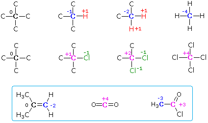
Factors that influence the properties or reactivity of molecular species as a consequence of the spatial orientation of filled or unfilled orbitals are termed stereoelectronic. In many cases, electron pairs in atomic or molecular orbitals that are involved in the making or breaking of bonds have an optimal geometrical alignment that is critical for a reaction to occur. This alignment provides the best overall bonding of participating species during the course of a reaction, and reflects the fact that transition states having the greatest bonding energy have lower potential energies than transition states with less bonding. Two relatively simple examples of stereoelectronic effects are found in SN2 and E2 reactions. The mechanisms of these reactions were described earlier in our discussion of alkyl halide chemistry, but a more extensive examination of these common transformations will provide a helpful introduction to this subject.
Nucleophilic substitution reactions of alkyl halides take place by a continuum of mechanisms, defined by SN2 behavior at one extreme and SN1 behavior at the other. The essential characteristics of the SN2 process include inversion of configuration at the reaction site, sensitivity to steric hindrance in the alkyl group, and second order kinetic behavior. The orbital interactions that take place in a successful SN2 reaction are shown in the following diagram. The bonding and antibonding sigma molecular orbitals composing the C-X bond are drawn in the yellow box at the top of the diagram. As a nucleophile approaches the rear side of the carbon, the orbital containing the non-bonded electron pair (light blue) begins to overlap with the empty antibonding C-X sigma orbital (pink colored), shown on the left of the bottom line. As electrons occupy this antibonding orbital, the C-X bond is weakened. In the transition state partial bonds exists between the carbon and both the nucleophile and the halogen (the carbon is essentially sp2 hybridized with the orange colored p-orbital providing the partial bonding). Finally, a full C-Nu sigma bond develops and the halogen leaves as an anion.
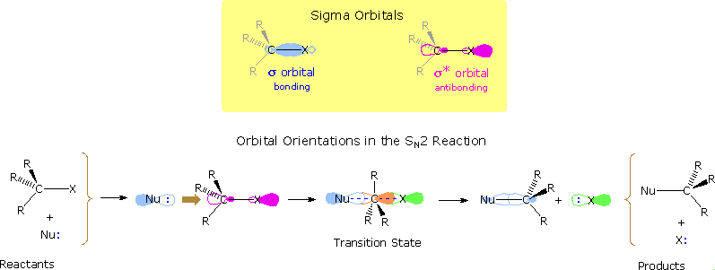
Other substitution reactions also proceed by the SN2 pathway, as illustrated by the stereoisomeric cyclohexyl tosylates in the following diagram. The bulky tert-butyl group on C-4 serves to lock the chair conformation in the configuration shown, so one isomer has an equatorial tosylate function, and the other an axial tosylate. On reaction with sodium thiophenolate, both isomers undergo bimolecular substitution with inversion, the axial isomer reacting about thirty times faster than its equatorial epimer. Steric hindrance to rear side nucleophile approach by the red colored hydrogen atoms is present for each isomer, but the relief of steric crowding of the axial tosylate leaving group helps to facilitate substitution of the that isomer.
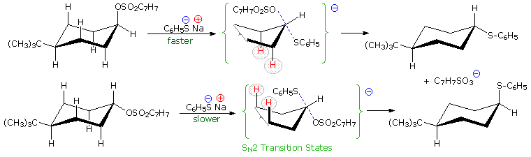
SN2 reactions may be intermolecular, as in these examples, or intramolecular. By clicking on the above equations, an example of two sequential substitutions, the first intermolecular and the second intramolecular, will be displayed. Note that the intramolecular substitution shown here proceeds via the same orbital alignment described above. The reacting moieties in intramolecular reactions are incorporated in the same molecule; consequently, such reactions exhibit first order kinetic behavior instead of the usual second order kinetics. Because enolate alkylation reactions are irreversible, the strained four-membered ring product is stable under the reaction conditions. In general, intramolecular forms of bimolecular reactions are faster than their intermolecular counterparts, since the reactive sites are held close together (their relative concentrations are as high as possible). The rapid lactonization of gamma and delta-hydroxy acids compared with corresponding intermolecular esterifications is another example of this principle, which is associated with a favorable entropy change. Note, however, that ring size has a profound influence on the intra- vs. intermolecular dichotomy.
Maximum overlap of the electron orbital of the nucleophile with the antibonding sigma orbital of the carbon substituent requires an approach from the rear side of the carbon, ideally 180º from the leaving group. The importance of this orientation, which is shown in previous diagrams, was made clear by an experiment conducted by A. Eschenmoser over 25 years ago. The results of Eschenmoser's experiment are presented in the following illustration. Initially, two equations are written. The first describes the intermolecular methylation of a sulfone anion by methyl tosylate, a typical SN2 reaction. The second is a very similar reaction which many would consider to be intramolecular, since a methyl sulfonate moiety is positioned ortho to the sulfone function. By clicking on these equations, evidence against the intramolecular mechanism will be displayed. Although intramolecular reactions are often favored, this case requires a significant departure from the 180º orbital alignment required by an authentic SN2 reaction. Since this reaction was found to be second order and is not faster than the simple intermolecular analog (reaction 1 on the preceding slide), it cannot be intramolecular.
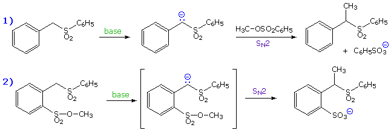
Elimination of vicinal groups, usually called 1,2- or beta-elimination, is the most common type of elimination reaction. Examples of some typical cyclohexyl halide eliminations are given in the following illustrations. From the location of the double bond in the elimination products, and the relative rates of elimination, it is clear that a diaxial orientation of the eliminating atoms or groups (colored red) is necessary for optimum reaction.
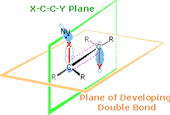
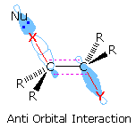
Two views of the characteristic orbital orientations of this anti-elimination are drawn on the right. Two planes are defined in the upper drawing. The light green plane defines the coplanar nature of the leaving groups (X & Y) and the carbons to which they are bonded. The light orange plane identifies the plane of the final double bond. Together with the lower drawing, the initial display shows the overlap of participating bonding orbitals. The corresponding antibonding orbitals of the C-X and C-Y bonds will appear by clicking on the upper display. This orbital alignment defines the stereoelectronic character of these elimination reactions. Note that the "anti" descriptor for this configuration refers to the antarafacial relationship of X and Y with respect to the light orange plane. Also, the E2 designation refers to the second order kinetics observed for these reactions. Although anti-eliminations are favored when possible, syn-elimination is observed in some cases. By clicking on the lower display, it will be replaced by a similar orbital drawing for syn elimination. In both syn and anti-transition states the X-C-C-Y bonds are coplanar, an alignment that allows facile conversion of two sigma bonds (colored red) to a pi-bond. Because of the eclipsed configuration of the syn-transition state, it is less stable than a corresponding anti-transition state. Syn-elimination is sometimes observed when Y is an ionic species, such as (CH3)3N(+); but it usually occurs when an anti configuration is unstable or not possible, as in the following example. Isotopic substitution confirms that this base-catalyzed beta-elimination takes place by a syn mechanism.
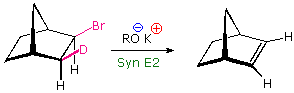
The anti-configurational relationship of the leaving groups in E2 reactions is relatively easy to see in the cyclohexyl compounds shown above, thanks to the chair conformations of these substrates. If this stereoelectronic feature is general for all E2 reactions, it should also hold for eliminations of acyclic compounds. The following examples illustrate this behavior. Conformational mobility about the central C-C bond allows each stereoisomer to adopt an anti alignment of leaving groups (colored green), and this is reflected in the products.
Addition reactions to carbon-carbon double bonds show a parallel stereoselectivity to the elimination reactions. Both syn and anti additions are observed, as noted in an earlier chapter. Indeed, the trans-addition of halogen reagents provides good examples of the importance of stereoelectronic control, even in the presence of opposing steric factors. The addition of bromine to 4-tert-butylcyclohexene, shown here, is a simple case. Assuming trans-addition, two stereoisomeric products are possible. Remarkably, the product having two axial bromines is favored over its diequatorial isomer. In order to maintain maximum bonding throughout the addition, carbon-bromine bonds must be aligned perpendicular to the plane of the double bond. This diaxial orientation mirrors the stereoelectronic demands of the E2 eliminations discussed above, and may be realized in two ways.
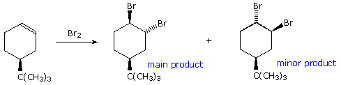
By clicking on the equation, the first and most favored addition will appear above. A half-chair conformation for the substituted cyclohexene is drawn on the left. The large t-butyl substituent occupies an equatorial orientation and serves to hold the conformer as shown. Trans-addition in the manner depicted leads directly to the diaxial product. Clicking on the drawing a second time displays the alternate trans addition. In order to maintain good orbital alignment throughout this reaction, the cyclohexane ring must adopt a higher energy twist-boat conformation. This on relaxing to a chair gives the diequatorial product. As a result, the first addition has a lower activation energy than the second. The attentive reader will recall that trans-addition of bromine and other halogen reagents was attributed to nucleophilic ring opening of a cyclic halonium ion intermediate. It is instructive to consider this aspect of the stereoelectronic factor using a somewhat more rigid alkene substrate. This is shown in the following illustration. The trans-fused six-membered rings hold the central cyclohexene ring in a tight configurational grip. Chair-chair interconversions are not possible, and even twist-boat conformers are very strained. The initial electrophilic attack of bromine takes place from the underside of the molecule, due to the steric hindrance of the axial methyl group. The resulting bromonium ion is written in brackets, and it is apparent that nucleophilic attack from the top would be less hindered at C-7 than at C-6 (the methyl group again). By clicking on the equation, a conformational drawing of this reaction will be displayed. The two possible sites of attack are designated by green (C-6) and red (C-7) arrows. Although bromide ion attack at C-6 is more hindered, it is favored by the diaxial stereoelectronic factor, and this is the initially observed product. Subsequent rearrangement of this diaxial dibromide to its diequatorial isomer takes place slowly.
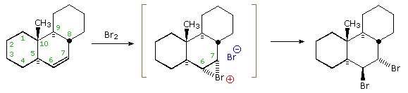
Stereoelectronic control of epoxide ring opening follows the same principles.
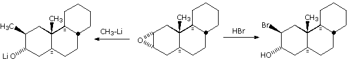
Stereoelectronic factors have been shown to influence the addition of nucleophilic reagents to carbonyl groups, particularly for aldehydes and ketones. An outline of this stereoelectronic effect is provided in the following diagram. The essential molecular orbitals are drawn to the left of the diagram, and the initial bonding with a nucleophile is believed to take place with the empty antibonding pi-orbital. This would explain the favored bonding alignment, known as the Bürgi-Dunitz trajectory.
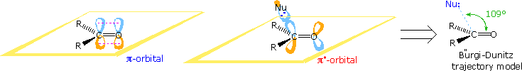
Many carbonyl addition reactions have been analyzed by a combination of steric and stereoelectronic factors. In the following illustration, two hydride reductions of methyl ketones are shown. Since each ketone has an existing stereogenic site, and since the reduction creates a new chiral center, diastereomeric products are possible. These may be designated in several ways, but the syn-anti notation is generally preferred. When the existing stereogenic center is located next to the carbonyl group, as in the upper equation, it may influence the proportion of product diastereomers. Diastereoselectivity of this kind is sometimes called asymmetric induction. This influence is, of course, the same for both an enantiomerically pure or a racemic reactant. If, however, the stereogenic center is far away from the carbonyl group, it has a negligible influence on the reduction, and a 50:50 mixture of diastereomers is produced (lower example).
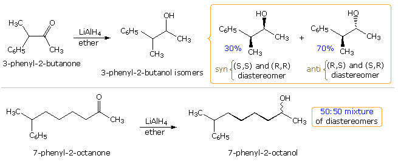
A number of models have been proposed to explain the diastereoselectivity of the first reduction. Many conformations about the alpha-C-CO bond may be written, and the challenge is to pick one that accounts for the observed selectivity. By clicking on the drawing, three of these will be displayed. For general use, the substituents on the chiral center adjacent to the carbonyl group are labeled L (large), M (medium) and S (small) to reflect their size. In each model the sterically preferred Bürgi-Dunitz approach is shown by a pink arrow, and each predicts the correct configuration of the favored diastereomer. The earliest rationalization was offered by D. Cram and is shown by the model on the left. A more favored conformation was chosen by G. Karabatsos, as shown by the center model. The most recent model (on the right) is that proposed by H. Felkin. These models all require classification of S, M & L substituents, occasionally a tricky process, and assume a reactant-like transition state for the reduction. Even so, some bonding of hydride to the carbonyl carbon must take place in the transition state, accompanied by corresponding small structural changes. Plausible structures for these transition states are given in the orange box. An important point needs to be made here. The ratio of products obtained from a a group of equilibrating conformers is determined by transition state energies, not conformer concentrations. This generally useful rule is called The Curtin Hammett Principle.
A brief analysis of these models is instructive. The Cram model makes use of an unfavorable conformer (R & L are eclipsed). Although this strain is slightly relieved in the transition state, the oxygen and associated metals is moving toward the M group, resulting in increased crowding. The Karabatsos model starts with a favorable conformer, but the nucleophile trajectory nearly eclipses the C-S bond (~20º dihedral angle). The oxygen shift in the transition state relieves eclipsing strain with M, benefiting the transition state energy. Finally, the Felkin-Ahn model seems to offer the best rationalization. The nucleophile trajectory is roughly 40º away from eclipsing the C-S bond, and both the oxygen and the R group undergo favorable shifts in the transition state.
Cyclic ketones have fewer low energy conformations than do acyclic ketones, and diastereoselectivity in nucleophilic addition reactions is often observed. An analysis similar to that used above for the acyclic compounds has proven useful in explaining and predicting the outcome of such reactions. By clicking on the drawing a second time, the hydride reduction of 2-methylcyclopentanone will be displayed. The trans isomer is favored by a 3:1 ratio. Again, steric hindrance to hydride approach on the Bürgi-Dunitz trajectory rationalizes this finding.
For two additional examples of stereoelectronic effects in conformational equilibria Click Here.
The formation of rings from suitably substituted molecular chains is a common requirement in synthesis. In general terms this transformation takes place by the bonding together of two reactive functional groups located at the ends of a chain. In the following diagram these are represented by an electrophilic group (E), and a nucleophilic group (Nu). Two possible modes of reaction are outlined here. In order to form a ring, an intramolecular reaction must take place. However, any significant quantity of reactant contains approximately 1020 molecules, and these may react with each other in an intermolecular manner to give dimeric and larger products. Controlling the course of such a reacting system is not a trivial matter, and many factors influence the outcome. Among these, the thermodynamic functions enthalpy and entropy are especially important.
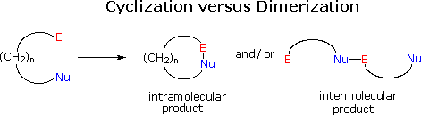
The enthalpy factor is associated with ring strain, which includes angle and eclipsing strain. Small three and four-membered rings are destabilized thermodynamically by such strain, and as a rule cannot be prepared by reversible bond formation. Five and six-membered rings are less strained, and are often created by reversible bond formation, as in the cases of lactonization of hydroxy acids and Dieckmann condensations. Medium sized rings (8 to 11 atoms in size) are generally destabilized by transannular crowding (steric hindrance by groups on opposite sides of the ring). The entropy factor is related to the concentration of chain conformations in which the ends to be joined are close together. For a three carbon chain this concentration is nearly 100%, but it drops off rapidly as the length of the chain increases. The number of different conformers a chain may assume increases with the length of the chain, and the proportion of conformers having proximate ends decreases. These thermodynamic factors interact in opposition to each other. Entropy favors small ring formation, even though this is energetically (enthalpically) unfavorable. Irreversible bond forming reactions, such as enolate alkylations, are used to achieve this outcome. Five and six-membered ring formation is favored by both factors, and may be achieved by both reversible and irreversible bond formation. The often cited principle that intramolecular reactions are favored over intermolecular reactions has its origin here. Medium and large sized rings, on the other hand, are difficult to make due to the low probability of suitable conformers in the reaction mixture. Intermolecular dimerization and polymerization are usually observed unless the reactions are conducted at high dilution. Remember, the rate of a bimolecular reaction, such as dimerization is proportional to the square of reactant concentration (2nd order); whereas, the unimolecular cyclization reaction has a rate proportional to the first power of reactant concentration (1st order). Thus, at very low reactant concentration, cyclization occurs faster than dimerization.
Because of the structural constraints in a cyclization transition state, stereoelectronic influences may be anticipated. One example is shown by the following two equations. Conjugate addition of amines to unsaturated carbonyl reactants is usually rapid and reversible, as demonstrated by the first equation. At first glance, the reactant in the second equation might be expected to undergo an intramolecular reaction of the same kind, yielding a five-membered heterocyclic ester (drawn in the red box). In practice, however, the reaction is slower and takes a different course, producing a five-membered lactam by direct acylation of the amine by the ester.
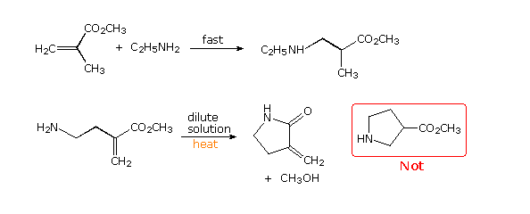
To explain this unexpected change in behavior, we must examine the orbital trajectories permitted in the two transition states (1,4- versus 1,2-addition). By clicking on the drawing a representation of these transition states will be displayed. Neither achieves a perfect Bürgi-Dunitz approach of the nitrogen nucleophile to a double bond, but the 1,2-addition comes much closer. Furthermore, the best 1,4-addition trajectory is unable to occur in a plane orthogonal to the plane of the double bond; whereas, the 1,2 addition is again much closer to the ideal orientation. For a display of 1,4- versus 1,2-addition in this example Click Here.
General stereoelectronic constraints on cyclization reactions were recognized by J. Baldwin, and summarized in a qualitative model now referred to as the Baldwin Rules. The following diagram illustrates the five major cyclization modes treated by Baldwin. In each case a nucleophilic moiety bonds to an electrophilic site (usually a carbon atom), designated by a purple dot. The flow of electrons during bond formation may be encompassed by the developing ring (an endo cyclization), or may shift away from the ring (an exo cyclization). Furthermore, the electrophilic site may have different hybridization states. The terminology used to identify a given ring formation consists of three parts: the ring size, given by n + 3 in the diagram (where n=0 or an integer), the exo / endo feature, and the hybridization. Since it is unlikely that endo-tet reactions will be useful for making rings, such reactions are not included here. However, the possibility of a six-membered cyclic analog of this kind was discussed earlier. Using this terminology, the previous cyclization of the amino ester to a lactam is a 5-exo-trig process (the double bond is the carbonyl group). The alternative ring closure by conjugate addition is 5-endo-trig, with respect to the carbon-carbon double bond, even though the conjugative shift of electrons to the ester carbonyl is exocyclic.
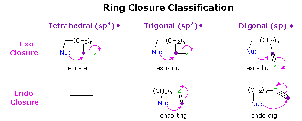
The stereoelectronically favored trajectories for nucleophilic bonding to carbon atoms of different hybridization states are summarized below. The tetrahedral and trigonal cases have already been described. It is clear that these trajectories represent a "least motion" transition state in which bonding is kept to a maximum throughout the reaction. By applying these trajectories to the five cyclization categories noted above, Baldwin was able to discern the effect of ring size on an idealized transition state. In some cases the constraints of a given ring size perturbed the transition state to such a degree that reaction seemed improbable. Such cases were called unfavorable.
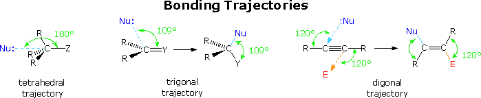
The following table summarizes Baldwin's conclusions. The 3-endo-trig, 4-endo-trig and 5-endo-trig combinations, together with the 3-exo-dig and 4-exo-dig possibilities (all colored pink in the table) were classified as "unfavorable". All the other combinations were classified "favorable", and are colored light green in the table. Remember, this evaluation is based primarily on stereoelectronic factors. So called favorable cyclizations may fail for other reasons, and sometimes an unfavorable cyclization may take place when alternative reactions are even less favored.
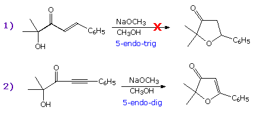 In the examples on the right the first equation describes a 5-endo-trig cyclization that fails to take place. The second equation shows a successful 5-endo-dig reaction, similar in many respects to the first.

When an enolate anion serves as the nucleophilic agent in a ring closure, a modification of the Baldwin rules should be used. These rules will be shown on the right by clicking on the drawing. An example comparing a 5-(enolexo)-exo-tet closure with an isomeric 5-(enolendo)-exo-tet option will then replace the modified rules by a second click on the drawing. A third click on the drawing will display a similar 6-(enolendo)-exo-trig example.
The following diagram shows two conformational equilibria in which one of the isomers is favored. Esters generally prefer to adopt a s-Z conformation (sometimes termed s-trans), as shown in the first example. This notation, which refers to the alkoxy sigma-bond to the carbonyl carbon, corresponds to that used for diene conformations. Lactones incorporated in seven membered and smaller rings are forced into an s-E conformation, and consequently are more reactive. In the second example, tri-tert-butyl hexahydro-(1,3,6)-triazine exists predominantly in a configuration having one axial tert-butyl group. Explaining these structural preferences provides an instructive review of stereoelectronic factors.
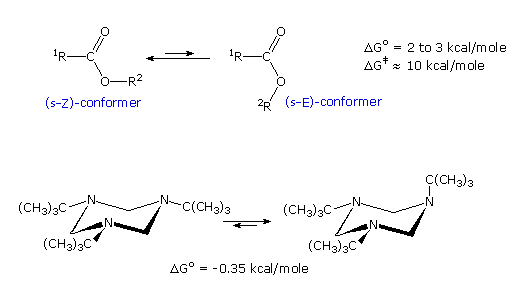
The ester equilibrium is most simply analyzed by considering electron and dipole interactions. The latter will be displayed by clicking on the diagram. In the s-E conformer the carbonyl group dipole is repelled by the similarly oriented ether oxygen dipole, whereas these dipoles have opposite directions in the s-Z conformer. Also, the non-bonded electron pairs of the two oxygens are closer together in the s-E conformer than in the s-Z conformer. A similar analysis of the second example shows a parallel alignment of all three amine dipoles in the all equatorial conformer, and a less repulsive arrangement in the axial conformer. A thorough evaluation of these cases should also examine the interaction of a non-bonding electron pair with neighboring (vicinal) antibonding orbitals that may function as electron acceptors. This analysis of the ester equilibrium will be shown by clicking on the diagram a second time. The upper part of the diagram illustrates the p-pi conjugation of one non-bonding electron pair with the carbonyl group. This conjugation explains the large energy barrier for interconversion of the E & Z conformers. The remaining electron pair occupies a sp2 orbital (colored pink), and this is the donor pair that may have a bonding interaction with an acceptor orbital (an anomeric effect). Only the Z-conformer provides this stabilizing interaction, which involves the antibonding C-O orbital (light gray) of the carbonyl sigma bond (colored red). A similar donor-acceptor interaction provides additional stabilization for the axial-tert-butyl conformer in the second example, as illustrated by clicking on the diagram a third time.
The anomeric effect was first recognized in carbohydrate chemistry, but applies generally to all organic compounds.
Carbocation intermediates, sometimes called carbonium ions, have been proposed or identified as important species in reactions ranging from electrophilic addition to alkenes, to unimolecular solvolysis of alkyl halides. The relative stability of these cationic intermediates varies markedly with the presence of substituents on the trivalent charged carbon atom, in a fashion that has led useful empirical rules for predicting reaction selectivity (summarized elsewhere). This stability order for simple alkyl alkenyl and aryl substituted carbocations is repeated below, followed by a table of supportive data.
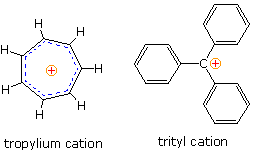
What are the factors that influence carbocation stability? The most common means of stabilizing an ion is by charge delocalization, either by inherent structural interactions or by solvation. As noted elsewhere, such structural interactions may usually be classified as inductive or resonance effects, and these may complement or oppose each other. Examples of both are given in the following diagram.
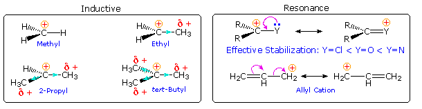
Alkyl groups have somewhat lower electronegativities and are more polarizable than hydrogen. If an alkyl group is bonded to the carbocation center, the electron pair of the C-C sigma bond will shift toward the positive charge, transferring a small part of that charge to the alkyl group. In the diagram on the left above, this inductive electron shift is designated by a light blue arrow head. Additional alkyl groups provide increased inductive charge dispersion, with each group assuming a share of the charge. Clearly, this analysis supports the stabilizing influence of alkyl substituents on carbocations. Resonance stabilization by non-bonding electron pairs on adjacent heteroatoms is particularly strong, as shown on the right above. Such charge delocalization overcomes the potential inductive destabilization of these electronegative substituents. Similar stabilization is provided by an adjacent nucleophilic pi-electron function, such as a double bond. A phenyl substituent affords even greater charge delocalization than a double bond, as reflected by the position of a benzyl cation in the stability order. Resonance stabilization is generally stronger than inductive effects, and is the predominant factor stabilizing the tropylium and trityl cations.
Another way in which alkyl substituents stabilize carbocations is illustrated in the following diagram. This conjugative charge delocalization, called hyperconjugation, involves partial pi-bond formation to alpha-carbon atoms, provided suitably oriented C-H or C-C bonds are present. The small increase in stability of the 1-propyl cation compared with an ethyl cation, as noted above, suggests that C-C hyperconjugation provides slightly greater stabilization than does the C-H hyperconjugation shown here. Hyperconjugation by alkyl substituents also acts to stabilize unsaturated functional groups, as noted earlier for carbon-carbon double bonds.
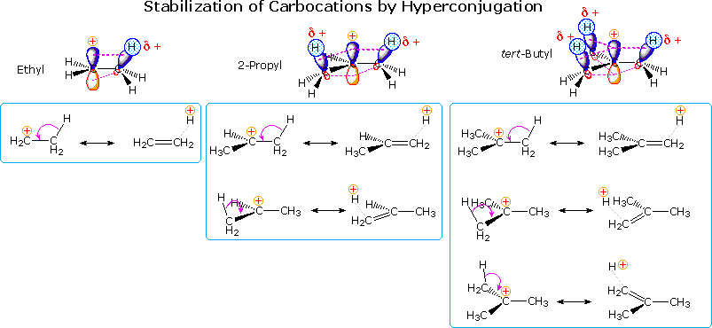
Since hyperconjugation and the inductive effect act in the same manner, their relative importance in carbocation stabilization is a matter of interest. Some insight to this question is found in a group of novel compounds, bridgehead substituted bicyclic halides. Two examples of these compounds are shown below. The nomenclature of bridged bicyclic compounds identifies the length of the chains that connect the bridgehead atoms (colored pink here). Three connecting chains are present in a bicyclic compound, and the number of atoms in each chain (excluding hydrogen) is given as a number in brackets. If the chains are of different lengths the longest is listed first. One of the bridgehead atoms is numbered one, and the longest chain continues the numbering sequence until the second bridgehead atom is included. Numbering then continues along the next longest chain. The base name of the bicyclic compound reflects the total number of carbons, and is therefore the sum of the bridging chains plus two (the bridgehead atoms).
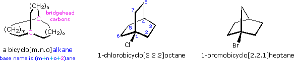
The bridgehead substituted halides shown above will form 3º-carbocations when ionized. Inductive stabilization of these cations should be similar to that of the tert-butyl cation, so if this were the predominant stabilizing factor from alkyl substitution, the reactivity of these halides should be similar to their tert-butyl counterparts. In practice, however, the bridgehead halides were found to be much less reactive. Indeed, 1-chlorobicyclo[2.2.1]heptane was recovered unchanged from prolonged treatment with hot ethanolic silver nitrate. The instability of such bridgehead carbocations has been attributed to the pyramidal shape forced upon the trigonal carbon (sp2 hybridized). However, covalent bonds are generally able to accommodate modest bending distortions without significant destabilization, and the inductive shift of electron pairs toward the positively charged carbon atom is unlikely to be impeded by a pyramidal configuration of the carbocation. An alternative explanation is that hyperconjugation with the alpha-methylene groups is prohibited by the rigid configuration of these bridgehead cations. By clicking on the diagram above, an illustration of one possible C-H hyperconjugative interaction will be displayed. The carbon-carbon double bond implicit to this occurrence is badly twisted, and could not exist as such in any stable alkene. Structural prohibitions of this kind are encompassed in an empirical guideline called Bredt's rule. On the other hand, C-C hyperconjugation may act to partially stabilize bridgehead carbocations. By clicking on the diagram a second time, two examples of such hyperconjugation will appear. While still relatively inert, the bicyclo[2.2.2]octane compound is roughly a million times more reactive than its bicyclo[2.2.1]heptane analog, shown above. This may be attributed to improved hyperconjugation, since the appropriate C-C bonds (colored red) are better aligned with a developing bridgehead carbocation. Furthermore, confirmation of expected changes in bond lengths resulting from such hyperconjugation has been obtained by X-ray diffraction analysis of a crystalline SbF6 salt of the adamantane cation. In this study, the red-colored bonds were lengthened and the green-colored bonds were shortened.